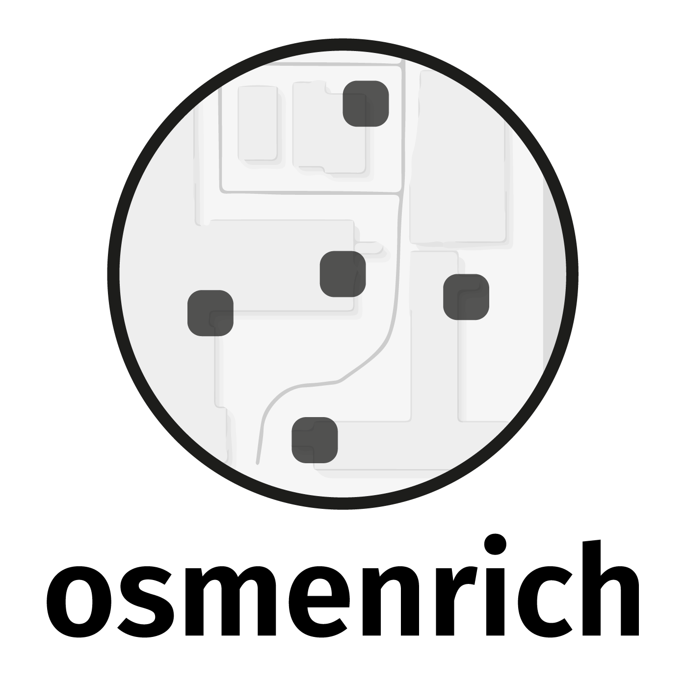

The goal of osmenrich is to easily enrich geocoded data (latitude/longitude) with geographic features from OpenStreetMap (OSM). The main language of the package is R and this package is designed to work with the sf and osmdata packages for collecting and manipulating geodata.
Installation
To install the package, you first need to have the remotes package installed. If you do not have this package yet, please install it first with:
install.packages("remotes")If you do have this package, due to recent changes in GitHub’s naming of branches, please make sure you have the latest version of remotes or at least version 2.2.
Once you did this, to continue the installation of the osmenrich package, run:
remotes::install_github("sodascience/osmenrich@main")or, for the development version, run:
remotes::install_github("sodascience/osmenrich@develop")This will use the default public APIs for OSM data and routing (for computing driving/walking distances and durations). Do not use osmenrich with default APIs for large datasets! If you want to learn how to use osmenrich for large queries follow the instructions in section Local API Setup below.
Usage
Simple enrichment example
Let’s enrich a spatial (sf) dataset (sf_example) with the number of waste baskets in a radius of 500 meters from each of the point specified in a dataset:
# Import libraries
library(tidyverse)
library(sf)
library(osmenrich)
# Create an example dataset to enrich
sf_example <-
tribble(
~person, ~lat, ~lon,
"Alice", 52.12, 5.09,
"Bob", 52.13, 5.08,
) %>%
sf::st_as_sf(
coords = c("lon", "lat"),
crs = 4326
)
# Print it
sf_example
#> Simple feature collection with 2 features and 1 field
#> geometry type: POINT
#> dimension: XY
#> bbox: xmin: 5.08 ymin: 52.12 xmax: 5.09 ymax: 52.13
#> CRS: EPSG:4326
#> # A tibble: 2 x 2
#> person geometry
#> * <chr> <POINT [°]>
#> 1 Alice (5.09 52.12)
#> 2 Bob (5.08 52.13)To enrich the sf_example dataset with “waste baskets” in a 500m radius, you can create a query using the enrich_osm() function. This function uses the bounding box created by the points present in the example dataset and searches for the specified key = "amenity" and value = "waste_basket. You can also add a custom name for the newly created column and specify the radius (r) used in the search. See Map Features on the website of OSM for a complete list of key and value combinations.
# Simple OSMEnrich query
sf_example_enriched <- sf_example %>%
enrich_osm(
name = "n_waste_baskets",
key = "amenity",
value = "waste_basket",
r = 500
)
#> Downloading data for waste_baskets... Done.
#> Downloaded 147 points, 0 lines, 0 polygons, 0 mlines, 0 mpolygons.
#> Computing distance matrix for n_waste_baskets...Done.The resulting enriched dataset sf_example_enriched is a sf object and can be printed as usual to inspect the newly added column n_waste_baskets.
sf_example_enriched
#> Simple feature collection with 2 features and 2 fields
#> geometry type: POINT
#> dimension: XY
#> bbox: xmin: 5.08 ymin: 52.12 xmax: 5.09 ymax: 52.13
#> geographic CRS: WGS 84
#> # A tibble: 2 x 3
#> person geometry n_waste_baskets
#> * <chr> <POINT [°]> <int>
#> 1 Alice (5.09 52.12) 75
#> 2 Bob (5.08 52.13) 1The waste baskets column is now the result of summing all the wastebaskets in a 500 meter radius for Alice and Bob:

Local API setup
OSM enrichment can ask for a lot of data, which can overload public APIs. If you intend to enrich large amounts of data or compute routing distances (e.g., driving duration) between many points, you should set up a local API endpoint.
Multiple docker-compose workflows for doing this are avaialble in the separate osmenrich_docker repository. Use the README in the repository to select the workflow that fits your desired outcome.
Contributing
Contributions are what make the open source community an amazing place to learn, inspire, and create. Any contributions you make are greatly appreciated.
In this project, the Gitflow workflow is used. Instead of having a single main branch, the project makes use of two branches to record the history of the project: develop and main. The main branch is used only for the official releases of the project, while the develop branch is used to integrate the new features developed. Finally, feature branches are used to develop new features or additions to the project that will be rebased and squashed in the develop branch.
The workflow to contribute with Gitflow becomes:
- Fork the Project
- Create your Feature Branch (
git checkout -b feature/<AmazingFeature>) - Commit your Changes (
git commit -m 'Add some <AmazingFeature>') - Push to the Branch (
git push origin feature/<AmazingFeature>) - Open a Pull Request
License and citation
The osmenrich package is published under the MIT license. When using osmenrich for academic work, please cite:
Contact
This package is developed and maintained by the ODISSEI Social Data Science (SoDa) team.
Do you have questions, suggestions, or remarks? File an issue in the issue tracker or feel free to contact Erik-Jan van Kesteren (
@ejvankesteren
(https://twitter.com/ejvankesteren)) or Leonardo Vida (
@leonardojvida
(https://twitter.com/leonardojvida))